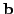
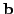

Next: Complexity Comparison of FHT
Up: Speed Improvement to FHT
Previous: Formal Statement of Algorithm
Contents
Direct speed tests on a Sun have shown that
the MFHT is about 8% faster than an FHT line fitter adapted from
the plane fitter described in section 5.11.2.3. This improvement
is almost entirely due to the hypersphere (circle) approximation to
a hypercube (square) used in the FHT, which increases the total number of
subdivisions. The speeds of individual subdivisions in the two versions
are almost identical.
When memory is limited, the MFHT is preferable. Ignoring the arrays
of flags and individual variables, the MFHT allocates space for one array,
 , at each call to
, at each call to
 . On the contrary,
the FHT requires four:
. On the contrary,
the FHT requires four:
 for each value [-1,-1], [-1,1],
[1,-1] and [1,1] of  (refer to procedure
for each value [-1,-1], [-1,1],
[1,-1] and [1,1] of  (refer to procedure  in
section 5.11.2.3). The FHT also uses global arrays, whereas the MFHT
does not. The subdivision procedure in the FHT can be
reordered so as to require only one array (which is used four times),
but at the cost of introducing repeated tests into the code,
slowing the algorithm by about 50%.
in
section 5.11.2.3). The FHT also uses global arrays, whereas the MFHT
does not. The subdivision procedure in the FHT can be
reordered so as to require only one array (which is used four times),
but at the cost of introducing repeated tests into the code,
slowing the algorithm by about 50%.
Next: Complexity Comparison of FHT
Up: Speed Improvement to FHT
Previous: Formal Statement of Algorithm
Contents
Philip McLauchlan
2009-01-27